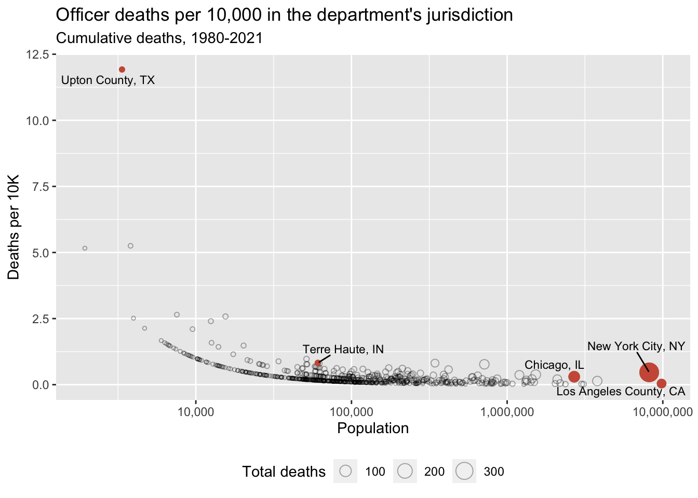

popVsDeaths <- ggplot() +
geom_point(data = filter(deathCountsWithLabels, population <= 75000),
mapping = aes(x = log10(population), y = numDeaths, shape = locationType),
color = "turquoise3", alpha = 1/3, show.legend = FALSE) +
geom_point(data = filter(deathCountsWithLabels, population > 75000),
mapping = aes(x = log10(population), y = numDeaths, shape = locationType),
color = "darkslategrey", alpha = 1/3) +
geom_point(data = deathCountsHighlights,
mapping = aes(x = log10(population), y = numDeaths, shape = locationType),
color = "orangered1",
show.legend = FALSE) +
geom_text_repel(data = deathCountsWithLabels,
mapping = aes(x = log10(population), y = numDeaths, label = locationLabel),
size = 3,
max.overlaps = Inf) +
scale_x_continuous(labels = c("100", "1,000", "10,000", "100,000", "1,000,000", "10,000,000")) +
labs(x = "Population",
y = "Deaths",
shape = "Location Type",
title = str_c("Officer Deaths, ", startingYear, "-", finalYear)) +
guides(shape = guide_legend(override.aes = list(alpha = 1, color = "black")))
print(popVsDeaths)Three police offers have died in Terre Haute in the last 10 years. Is that a lot?
Data suggests it is, relative to Terre Haute’s population.
Data Analysis
A THPD detective was shot and killed this week, making it the third officer death in Terre Haute, Indiana in the past 10 years. I compared officer death counts to find out if this is a large number given Terre Haute’s relatively small size.
Background üîé
This week, Terre Haute Police Department Detective Greg Ferency was shot on the job. This is where I live and, as the local news noted, it was the third police death in the THPD in 10 years. For a city of only around 60,000, this seemed like a lot and led my wife to wonder if it was unusually high. I tried to find out.
 Photo: WTHI
Photo: WTHI
The data üìí
üóÑ I collected data on police officer deaths from the Officer Down Memorial Page. Their database includes ‚Äúline of duty‚Äù deaths from all causes going back to before 1800. I decided to only collect data from 1980 to today (the most recent death in the database was the death in Terre Haute). So my analysis is only of deaths from the last ~40 years.
üóÑ Data on US county and city populations came from the US Census. This data includes annual population estimates going back about 10 years. For this analysis, I just decided to use the population numbers from the 2010 census.
How I combined the data
I made a few assumptions to get the data in a workable format. First, I narrowed the set of police deaths down to those that occurred in departments that had Police Department or Sheriff's Department in the name.
The police deaths dataset only included department names and states. So to determine the exact location of each department, I assumed each department was named after the city or county where it was located (e.g. Dallas Police Department in the city of Dallas). If a department didn’t follow this naming convention, it was excluded from analysis.
Finally, I matched up the city and county names with the names in the census data sets. Sometimes they didn’t match. For example, Nashville appears in the census data set as Nashville-Davidson metropolitan government.
Results
Cumulative deaths compared to population
First, let’s just compare city/county population to the cumulative number of officer deaths since 1980.
⚠️ One problem with this plot is that many departments showing zero deaths are actually mistakes. This is due to the overly simple department-location matching procedure I used.
One example is the Miami-Dade Police Department. This got included because it has the phrase Police Department in it. However, Miami-Dade is a county (a large one, with about 2.5 million people living there) and is identified as Miami-Dade County in my county population dataset. So the department name and county name fail to match because the word “county” doesn’t appear in the name of the department.
This actually happened a lot, so you can’t really trust all the zeros. But surely some of the zeros are accurate. For example, this site reports that 16 out of Indiana’s 92 counties have had no “line of duty” deaths. To not include departments with no deaths would be a mistake. But given the dataset I had, there wasn’t a reliable way to identify those departments, and I knew for a fact that many of the zeros I found were simply due to name mismatches. So I decided it was best overall to just remove the zeros entirely.
Here’s the same plot with the zeros removed.
popVsDeaths2 <- ggplot() +
geom_point(data = filter(deathCountsWithLabels2, population <= 75000),
mapping = aes(x = log10(population), y = numDeaths, shape = locationType),
color = "turquoise3", alpha = 1/3, show.legend = FALSE) +
geom_point(data = filter(deathCountsWithLabels2, population > 75000),
mapping = aes(x = log10(population), y = numDeaths, shape = locationType),
color = "darkslategrey", alpha = 1/3) +
geom_point(data = deathCountsHighlights2,
mapping = aes(x = log10(population), y = numDeaths, shape = locationType),
color = "orangered1",
show.legend = FALSE) +
geom_text_repel(data = deathCountsWithLabels2,
mapping = aes(x = log10(population), y = numDeaths, label = locationLabel),
size = 3,
max.overlaps = Inf) +
scale_x_continuous(labels = c("1,000", "10,000", "100,000", "1,000,000", "10,000,000")) +
labs(x = "Population",
y = "Deaths",
shape = "Location",
title = str_c("Officer Deaths, ", startingYear, "-", finalYear),
subtitle = "Locations where at least one death occurred") +
guides(shape = guide_legend(override.aes = list(alpha = 1, color = "black")))
print(popVsDeaths2)Many fewer departments (especially from small cities), but same basic shape. In both plots, I’ve colored small towns like Terre Haute in turquoise and also higlighted a few standout locations to help you orient yourself.
Scaling by population
These plots are a little hard to make sense of because the larger cities have way more deaths which squashes the plot vertically and makes it difficult to draw comparisons. So let’s try scaling the number of deaths by city/county population.
Note: Arguably it would make more sense to scale by department size, but this information is harder to come by. I assume department size is correlated with population anyway.
Also, from this point on, I’m going to continue to exclude the zero-death locations for the reasons explained above.
scaledPopsVsDeaths <- ggplot(data = deathCountsNoZeros) +
geom_point(mapping = aes(x = log10(population), y = deathsPer10k, size = numDeaths),
shape = "circle open",
alpha = 1/3) +
geom_point(data = deathCountsHighlights2,
mapping = aes(x = log10(population), y = deathsPer10k, size = numDeaths),
shape = "circle",
color = "coral3",
show.legend = FALSE) +
geom_text_repel(data = deathCountsWithLabels2,
mapping = aes(x = log10(population), y = deathsPer10k, size = numDeaths,
label = locationLabel),
size = 3,
max.overlaps = Inf) +
scale_x_continuous(labels = c("1,000", "10,000", "100,000", "1,000,000", "10,000,000")) +
labs(x = "Population",
y = "Deaths per 10K",
size = "Total deaths",
title = "Officer deaths per 10,000 in the department's jurisdiction",
subtitle = str_c("Cumulative deaths, ", startingYear, "-", finalYear)) +
theme(legend.position = "bottom")
print(scaledPopsVsDeaths)
This plot suggests that Terre Haute is above average but maybe not a huge outlier, even among cities of similar population size.
More generally, this plot suggests there is not much of a relationship between city size and number of officer deaths, at least for cities above a certain size. The reason it looks like there is a relationship between population and deaths is almost certainly due to there being greater variability for smaller towns/departments. For example, a single death in a small town would have a big effect on this metric.
So let’s exclude small towns (population < 50,000) to get a better understanding.
scaledPopsVsDeaths_noSmallTowns <- ggplot(data = deathCounts_noSmallTowns) +
geom_point(mapping = aes(x = log10(population), y = deathsPer10k, size = numDeaths),
shape = "circle open",
alpha = 1/3) +
geom_point(data = deathCountsHighlights_noSmallTowns,
mapping = aes(x = log10(population), y = deathsPer10k, size = numDeaths),
shape = "circle",
color = "coral3",
show.legend = FALSE) +
geom_text_repel(data = deathCountsWithLabels_noSmallTowns,
mapping = aes(x = log10(population), y = deathsPer10k, size = numDeaths,
label = locationLabel),
size = 3) +
scale_x_continuous(breaks = c(4,5,6,7),
labels = c("10,000", "100,000", "1,000,000", "10,000,000")) +
labs(x = "Population",
y = "Deaths per 10K",
size = "Total deaths",
title = "Officer deaths per 10,000 people in the department's jurisdiction",
subtitle = str_c("Cumulative deaths, ", startingYear, "-", finalYear)) +
theme(legend.position = "bottom")
print(scaledPopsVsDeaths_noSmallTowns)This plot allows us to get a better sense of variability, especially among midsize towns. In this plot, Terre Haute does look a bit more like an outlier. In more quantitative terms, among the locations in the plot above, Terre Haute is in the 99th percentile for officer deaths, scaled by population size. It drops to the 93rd percentile if you include the small towns that were in the previous plot.
Officer deaths over time
One last question I had was whether Terre Haute’s outlier status was driven by the last 10 years. To get a sense of this, let’s look at officer deaths over time.
deathsOverTime <- ggplot(data = deathCountsByYear) +
geom_step(mapping = aes(x = EOW, y = deathsPer10k, group = location_long),
alpha = 1/12) +
geom_step(data = deathCountsByYearHighlights,
mapping = aes(x = EOW, y = deathsPer10k, group = location_long),
color = "gold2",
alpha = 2/3) +
geom_step(data = filter(deathCountsByYear, location_long == "Terre Haute, IN"),
mapping = aes(x = EOW, y = deathsPer10k),
color = "coral3",
size = 1.5) +
geom_text_repel(data = filter(deathCountsByYearHighlights, EOW == today()),
mapping = aes(x = EOW, y = deathsPer10k, group = location_long,
label = location_long),
size = 3) +
labs(title = "Cumulative officer deaths",
subtitle = "Jurisdictions with populations > 50,000",
x = "Date",
y = "Total deaths per 10,000 residents") +
theme_minimal() +
theme(panel.grid.minor.x = element_blank(),
panel.grid.major.x = element_blank(),
panel.grid.minor.y = element_blank())Warning: Using `size` aesthetic for lines was deprecated in ggplot2 3.4.0.
ℹ Please use `linewidth` instead.print(deathsOverTime)This plot shows cumulative deaths since 1980 for each department serving an area over 50,000 (again limited to only those departments that had at least one death). Terre Haute is highlighted. It gives the impression that Terre Haute wasn’t much of an outlier until the past 10 years when the last three officers died.
It also shows that no officers died in Terre Haute for several decades before 2011.
Conclusion ☑️
I think it’s fair to say that, right now, Terre Haute stands out statistically. The question is whether that’s indicative of anything meaningful. With thousands of jurisdictions across the US, some are bound to have unusually high numbers of deaths due to random chance alone. So it’s hard to draw any broad conclusions from these results without more information.
For example, speaking for myself, as someone pretty ignorant of law enforcement, I imagined “line of duty” deaths to be the result of attacks at the hands of suspects. But a number of the deaths in the dataset were caused by things like car crashes, Covid-19 (from the past two years), and heart attacks – things that happened while on the job but might be hard to attribute to the job itself. My point isn’t to diminish any of these deaths at all, only to point out that more deaths isn’t necessarily a sign of some underlying cause or problem. You would need to look at the causes of death (among other factors) before drawing a conclusion like that.
Code and data üìë
Data and the full analysis code I used to generate these plots are available here.